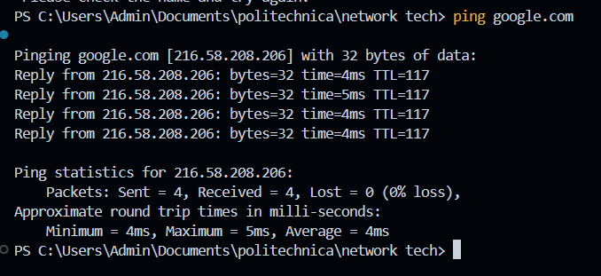
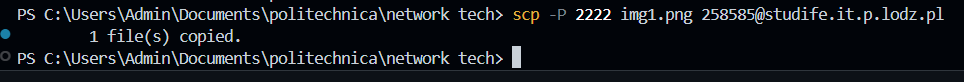
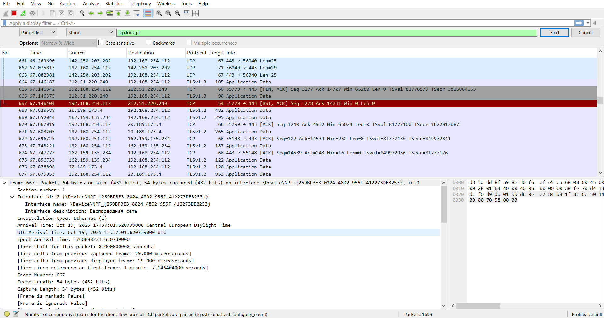
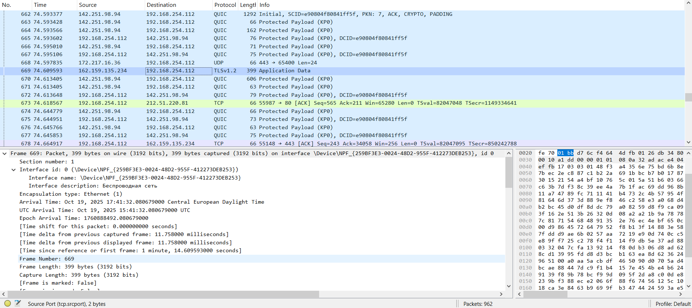

This report provides a theoretical description of the ISO/OSI model, its Protocol Data Units (PDUs), and the assignment of various network protocols to its corresponding layers, followed by practical analysis.
The Open Systems Interconnection (OSI) Model is a conceptual framework created by the International Organization for Standardization (ISO).
It describes seven layers that computer systems use to communicate over a network. It's the first standard model for network communications, adopted by all major computer and telecommunication companies.
The model is a conceptual tool for understanding and designing networking architectures,
defining how applications running on different systems can communicate with each other.
The seven layers of the OSI model, from top to bottom, are:
A Protocol Data Unit (PDU) is a single unit of information transmitted over a network. It represents the data payload at different stages of the communication process, often changing name as it moves through the layers.
| OSI Layer | PDU Name | Description |
|---|---|---|
| 7. Application | Data (or Message) | The actual application data. |
| 6. Presentation | Data (or Message) | Encoded/formatted application data. |
| 5. Session | Data (or Message) | Data with session control information. |
| 4. Transport | Segment (TCP) or Datagram (UDP) | Data broken into smaller, managed chunks for end-to-end transfer. |
| 3. Network | Packet | Data with network-layer headers (source and destination logical addresses). |
| 2. Data Link | Frame | Packet encapsulated with data link headers and trailers (physical addresses). |
| 1. Physical | Bit | A stream of raw binary data (0s and 1s) representing the signal on the medium. |
The following table assigns the specified protocols to the most commonly associated layer(s) of the OSI model. Note that some protocols span multiple layers (e.g., SSL/TLS) or are part of hybrid models.
| OSI Layer | Assigned Protocols |
|---|---|
| 7. Application | DNS, FTP, HTTP, MIME, NNTP, RTP, SIP, Telnet |
| 6. Presentation | SSL (Partially), TLS (Partially) |
| 5. Session | NetBIOS, SSL (Partially), TLS (Partially) |
| 4. Transport | TCP, UDP |
| 3. Network | ICMP, IGMP, IPv4, IPv6, L2TP (Tunneling component) |
| 2. Data Link | ARP, Bluetooth (MAC/LLC), IEEE 802.11 (MAC/LLC), L2TP (Data Link component), SLIP |
| 1. Physical | Bluetooth (PHY), IEEE 1394, IEEE 802.11 (PHY), RS-232, RS-449, USB |
| Multi-Layer | DHCP (Application/Transport/Network/Data Link), SSL/TLS (Presentation/Session) |
ping google.comThe `ping` command successfully verified connectivity to `google.com` (IP: 216.58.208.206) with 0% loss. This process involves initial domain name resolution and subsequent ICMP echo requests.
Ping Result Screenshot:
Wireshark Protocol Analysis & OSI Layer Assignment:
| Protocol | Function | OSI Layer |
|---|---|---|
| DNS | Resolves the domain name to IP. | 7. Application |
| UDP | Transport for fast DNS queries. | 4. Transport |
| ICMP | Used by `ping` for echo requests/replies. | 3. Network |
| IPv4/IPv6 | Logical addressing and packet routing. | 3. Network |
| ARP / Ethernet | Local address resolution (MAC) and framing. | 2. Data Link |
studife.it.p.lodz.plThe Secure Copy Protocol (SCP) utilizes SSH to establish a secure channel. All data and authentication are encrypted during the file upload to the remote server (port 2222).
Ping Result Screenshot:
Wireshark Protocol Analysis & OSI Layer Assignment:
| Protocol | Function | OSI Layer |
|---|---|---|
| SCP | File transfer management. | 7. Application |
| SSH | Encrypted communication and authentication. | 6. Presentation / 5. Session |
| TCP | Reliable, connection-oriented data stream (port 2222). | 4. Transport |
| IPv4/IPv6 | Logical addressing and routing. | 3. Network |
| Ethernet | Physical addressing and framing. | 2. Data Link |
it.p.lodz.plAccessing the institutional webpage results in secure HTTPS traffic. The connection is established via TCP and then secured using TLS before the HTTP content is transferred.
Ping Result Screenshot:
Wireshark Protocol Analysis & OSI Layer Assignment:
| Protocol | Function | OSI Layer |
|---|---|---|
| DNS | Resolves the domain name to IP. | 7. Application |
| HTTP | Transfers the webpage content (inside TLS). | 7. Application |
| TLSv1.2/3 | Encrypts HTTP traffic (HTTPS security). | 6. Presentation |
| TCP | Reliable transport (port 443). | 4. Transport |
| IPv4/IPv6 | Logical addressing and routing. | 3. Network |
| Ethernet | Physical addressing and framing. | 2. Data Link |
studife.it.p.lodz.plThe student portal uses an identical secure protocol stack (HTTPS) to protect sensitive information (like login credentials) during all communication.
Wireshark Protocol Analysis & OSI Layer Assignment:
| Protocol | Function | OSI Layer |
|---|---|---|
| DNS | Resolves the domain name to the server's IP. | 7. Application |
| HTTP | Transfers the webpage content (inside TLS). | 7. Application |
| TLSv1.2/3 | Encrypts HTTP traffic (HTTPS security). | 6. Presentation |
| TCP | Reliable transport (port 443). | 4. Transport |
| IPv4/IPv6 | Logical addressing and routing. | 3. Network |
| Ethernet | Physical addressing and framing. | 2. Data Link |